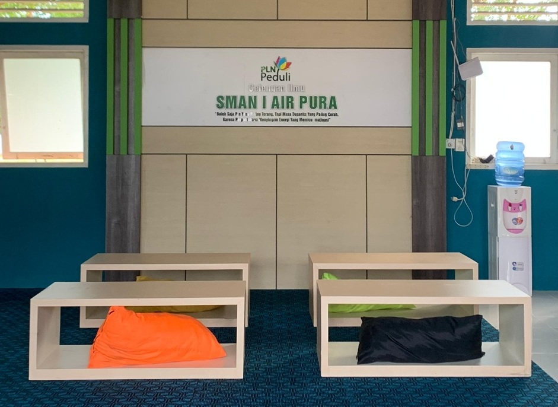
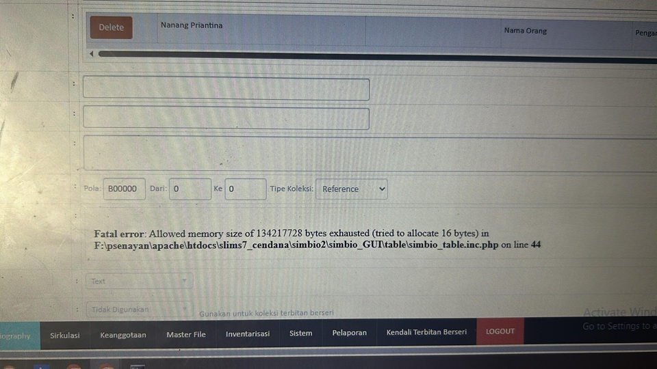
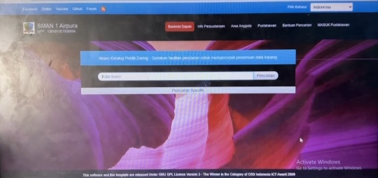

|
|
Profil Sekolah | GTK | Prestasi | Kegiatan | Informasi |
|
 |
Profil
Perpustakaan
Nama : Perpustakaan Sekolah SMAN 1 Airpura NPP : 1301011E1000004 Akreditasi : Belum terakreditasi Alamat : Jl. Hilalang Panjang Kec Airpura Kab Pesisir Selatan Prov Sumatera Barat Kode Pos 25671 Kepala Perpustakaan : Dena Marisa, S.Pd.I., M.Pd |
OPAC

Kontak Perpustakaan
| Neni Parianti
(HP/WA) 082390935940 Nadia Zal Utami (HP/WA) 089530292092 Neno Wahyu Hariani (HP/WA) 081268111619 |
Database On Line (SLIMS 7)
 |
Sosial Media Perpustakaan
|
|
FAQ (Frequently Asked Question)
Q : Buku apa saja yang tersedia di perpustakaan SMAN 1 Airpura?
A : Hampir semua buku referensi tersedia seperti buku pelajaran, jurnal,
artikel, kumpulan fatwa MUI, novel
dan referensi lain ada di perpustakaan SMAN 1 Airpura
Q : Jika jam kosong, bolehkah siswa berkunjung ke perpustakaan ?
A : Jika jam pelajaran sedang kosong karena guru berhalangan hadir, siswa diperbolehkan berkunjung di jam tersebut
Q : Apakah perpustakaan hanya sekedar tempat membaca buku ?
A : Tidak, saat ini fungsi perpustakaan bukan hanya sekedar tempat untuk membaca buku saja tetapi juga sebagai tempat informasi dan rekreasi, oleh karena itu di perpustakaan juga tersedia beberapa permainan edukasi, seperti catur